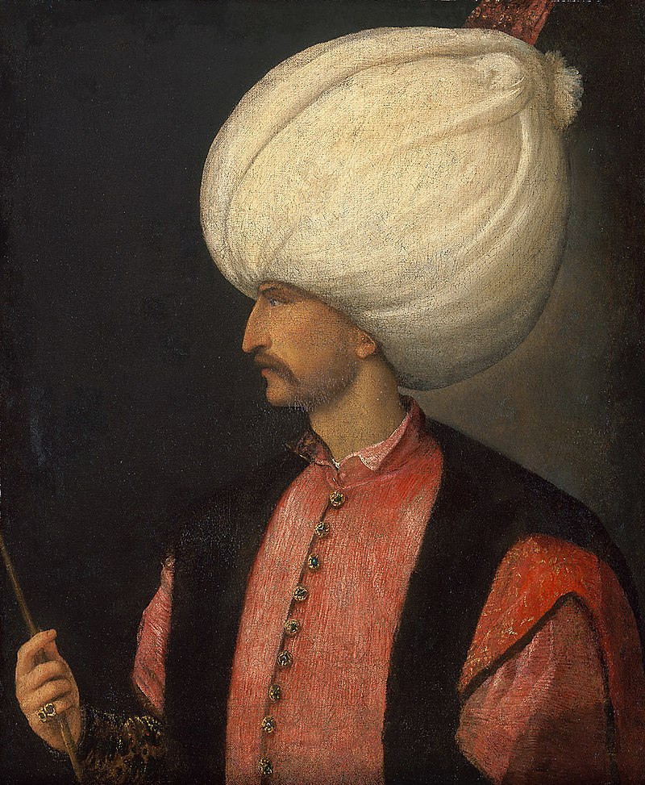

Матеріал з Вікіпедії — вільної енциклопедії
Сулейма́н І Пи́шний або Кануні (Законодавець) (осман. سليمانا اول, тур. Süleyman Kanuni) (6 листопада 1494, Трабзон — 5/6 вересня 1566, Сігетвар) — османський султан з 1520 до 1566[2]. Був сином Селіма І Грізного та Хафси Султан. Сулейман став найвизначнішим правителем Сходу XVI ст., бувши на вершині військової, політичної і економічної могутності Османської імперії.
Титули Сулеймана — султан султанів (шах шахів, цар царів), Тінь Бога на Землі, Цезар усіх земель Риму (після взяття Риму — Константинополя, османські султани взяли собі титул «римського імператора»). Дружиною султана Сулеймана I під іменем Хюррем султан була Настя Лісовська, більш відома як Роксолана.
У часи його панування Османська імперія досягла піку своєї могутності. Сулейман I проводив численні війни, в результаті яких розширив територію Османської імперії. Він був найбільшим, з погляду обсягу приєднаних земель, османським завойовником. Провів реформу адміністрації, армії, фінансів. Але коло його інтересів не обмежувалося державними справами. Він складав вірші, захоплювався ювелірною справою, був вправним ковалем та особисто брав участь у відливці гармат для своєї армії.
У момент появи на світ Сулеймана його батько, Селім І Грізний, був третім у черзі наступником трону (за братами Ахмедом і Коркучем). Хафіза була з дочкою Кримського хана. Певним є те, що перед народженням Сулеймана вона входила до гарему Селіма. Народження сина зробило її другою дружиною (першою була черкеска Айша) та принесло титул Хафіза Султан (султанші), замість колишнього Хафіза Хатун, коли вона була наложницею в гаремі. Хафса народила восьмеро дітей, троє синів померли в дитинстві від чуми. Сулеймана було обрізано, правдоподібно, після закінчення сьомого року життя. У тому ж віці його послали до двору султана Баязида ІІ в Константинополі. Він навчався там основам військової справи, права та фехтування. Науки, в основному історію і філософію, викладав йому Karakyzogl Hajrüddün Hyzyr. Вивчив також іноземні мови: знав сербську, арабську та перську. Навчився також ремеслу ювеліра.
У віці 14 років почав виконувати державні обов'язки (правитель у Кафі в Криму). Коли його батько став падишахом, отримав управління над провінцією Меніса, здійснював також функції правителя європейських провінцій під час військових походів Селіма. 21 вересня 1520 помер Селім І (Сулейман мав на той час 26 років). З міжвладдя хотів скористатися намісник сирійської провінції Dżanberdi Gazâlî. Сподіваючись на підтримку іранського правителя шаха Ісмаїла I (засновника династії Сефевідів), вирішив здобути самостійність (почав навіть карбувати власну монету). Сулейман придушив бунт силами з Анатолії і взяв владу в цілій Османській імперії у свої руки.
Як мусульманин Сулейман міг мати 4 дружини та стільки наложниць, скільки міг утримувати:
Сулейману І Роксолана була подарована як невільниця пашею Ібрагімом. Роксолана була великим коханням султана. Перший син Сулеймана і Роксолани народився у 1521 році. Сулейман адресував їй свою любовну поезію. У 1530 році відбувся шлюб Сулеймана і Роксолани та гучне весілля. Роксолана запропонувала побудову мечеті, що носила ім'я Сулеймана. Ця ідея була реалізована придворним архітектором Сінаном. Свій великий вплив на султана Роксолана використовувала для політичних інтриг, впливала на зовнішню політику, листувалася з Боною Сфорцою та Сигізмундом II Августом. Брала участь у визначенні наступника трону: в результаті її інтриг, син Роксолани Селім, після смерті батька посів трон як Селім II.
Після смерті Роксолани навесні 1558 року Сулейман І проводив діяльність, присвячену її пам'яті. Збудував в імперії велику кількість об'єктів, присвячених її пам'яті. Сулейман І та Роксолана були поховані в одному склепі. Започаткований Роксоланою період впливу дружин султанів на їх чоловіків отримав назву правління султанш — в чому вбачають одну з причин занепаду Османської імперії.